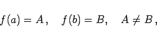
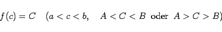

Inhalt Index DeskTop Bronstein

 Funktionen und ihre Darstellung Funktionsbegriff Stetigkeit einer Funktion Eigenschaften stetiger Funktionen
Funktionen und ihre Darstellung Funktionsbegriff Stetigkeit einer Funktion Eigenschaften stetiger Funktionen


Wenn eine Funktion f(x) in einem Intervall definiert und stetig ist und in zwei Punkten a und b dieses Intervalles, wobei a <b ist, verschiedene Werte A und B annimmt, d.h.
|  | (2.33a) |
dann existiert zu jeder zwischen A und B gelegenen Zahl C wenigstens ein Punkt c zwischen a und b, für den
|  | (2.33b) |
gilt. Anders ausgedrückt: Die Funktion f(x) nimmt jeden Wert zwischen A und B wenigstens einmal an.